Trang 1/18
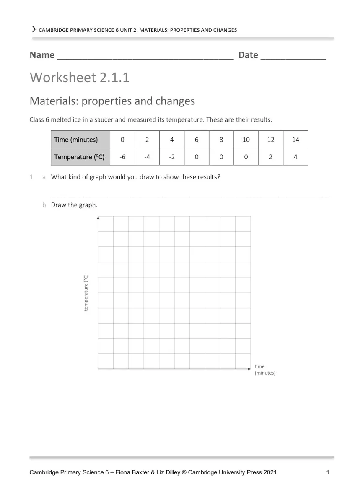
CAMBRIDGE PRIMARY SCIENCE 6 UNIT 2: MATERIALS: PROPERTIES AND CHANGESCambridge Primary Science 6 – Fiona Baxter & Liz Dilley © Cambridge University Press 2021 1 Name ___________________________________ Date _____________ Worksheet 2.1.1 Materials: properties and changes Class 6 melted ice in a saucer and measured its temperature. These are their results. Time (minutes) 0 2 4 6 8 10 12 14 Temperature (oC) -6 -4 -2 0 0 0 2 4 1 a What kind of graph would you draw to show these results? ______________________________________________________________________________ b Draw the graph.
Trang 2/18
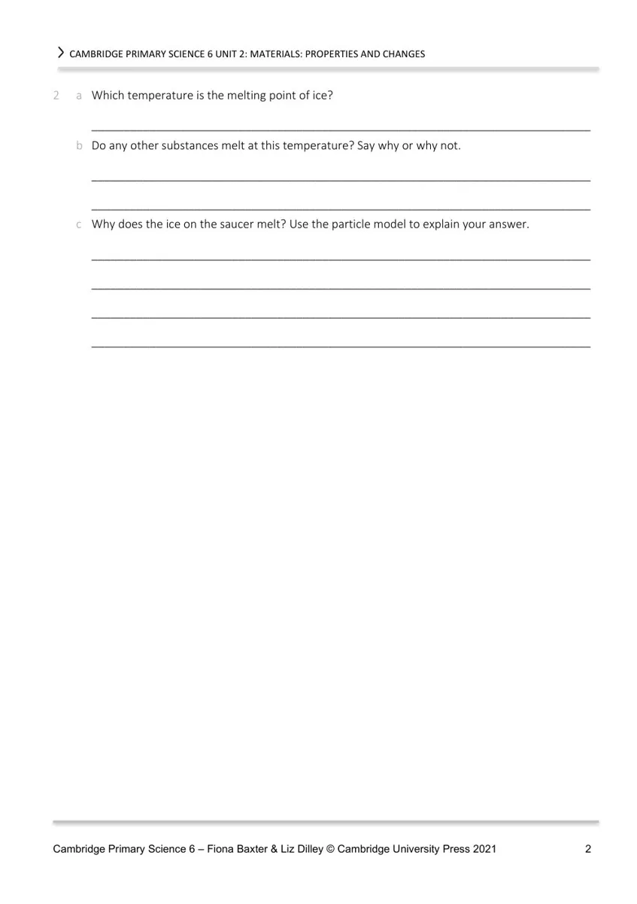
CAMBRIDGE PRIMARY SCIENCE 6 UNIT 2: MATERIALS: PROPERTIES AND CHANGESCambridge Primary Science 6 – Fiona Baxter & Liz Dilley © Cambridge University Press 2021 2 2 a Which temperature is the melting point of ice? ______________________________________________________________________________ b Do any other substances melt at this temperature? Say why or why not. ______________________________________________________________________________ ______________________________________________________________________________ c Why does the ice on the saucer melt? Use the particle model to explain your answer. ______________________________________________________________________________ ______________________________________________________________________________ ______________________________________________________________________________ ______________________________________________________________________________
Trang 3/18
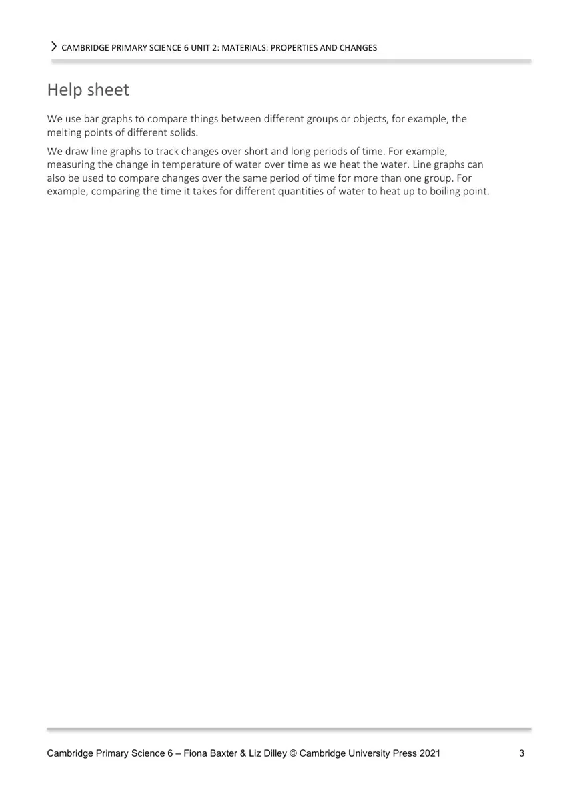
CAMBRIDGE PRIMARY SCIENCE 6 UNIT 2: MATERIALS: PROPERTIES AND CHANGESCambridge Primary Science 6 – Fiona Baxter & Liz Dilley © Cambridge University Press 2021 3 Help sheet We use bar graphs to compare things between different groups or objects, for example, the melting points of different solids. We draw line graphs to track changes over short and long periods of time. For example, measuring the change in temperature of water over time as we heat the water. Line graphs can also be used to compare changes over the same period of time for more than one group. For example, comparing the time it takes for different quantities of water to heat up to boiling point.
Trang 4/18
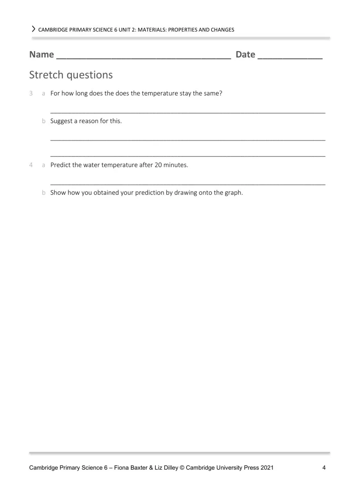
CAMBRIDGE PRIMARY SCIENCE 6 UNIT 2: MATERIALS: PROPERTIES AND CHANGESCambridge Primary Science 6 – Fiona Baxter & Liz Dilley © Cambridge University Press 2021 4 Name ___________________________________ Date _____________ Stretch questions 3 a For how long does the does the temperature stay the same? ______________________________________________________________________________ b Suggest a reason for this. ______________________________________________________________________________ ______________________________________________________________________________ 4 a Predict the water temperature after 20 minutes. ______________________________________________________________________________ b Show how you obtained your prediction by drawing onto the graph.
Trang 5/18
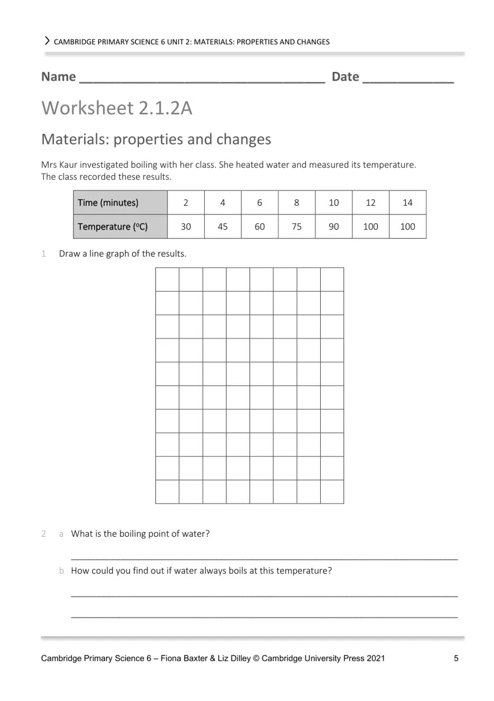
CAMBRIDGE PRIMARY SCIENCE 6 UNIT 2: MATERIALS: PROPERTIES AND CHANGESCambridge Primary Science 6 – Fiona Baxter & Liz Dilley © Cambridge University Press 2021 5 Name ___________________________________ Date _____________ Worksheet 2.1.2A Materials: properties and changes Mrs Kaur investigated boiling with her class. She heated water and measured its temperature. The class recorded these results. Time (minutes) 2 4 6 8 10 12 14 Temperature (oC)30 45 60 75 90 100 100 1 Draw a line graph of the results. 2 a What is the boiling point of water? ______________________________________________________________________________ b How could you find out if water always boils at this temperature? ______________________________________________________________________________ ______________________________________________________________________________
Trang 6/18
CAMBRIDGE PRIMARY SCIENCE 6 UNIT 2: MATERIALS: PROPERTIES AND CHANGESCambridge Primary Science 6 – Fiona Baxter & Liz Dilley © Cambridge University Press 2021 6 Name ___________________________________ Date _____________ Worksheet 2.1.2B Materials: properties and changes Mrs Kaur investigated boiling with her class. She heated water and measured its temperature. The class recorded these results. Time (minutes) 2 4 6 8 10 12 14 Temperature (oC)30 45 60 75 90 100 100 Mr Moola’s class carried out the same investigation. These are their results. Time (minutes) 2 4 6 8 10 12 14 Temperature (oC)40 60 80 100 100 100 100 1 Draw a line graph for each set of results.
Trang 7/18
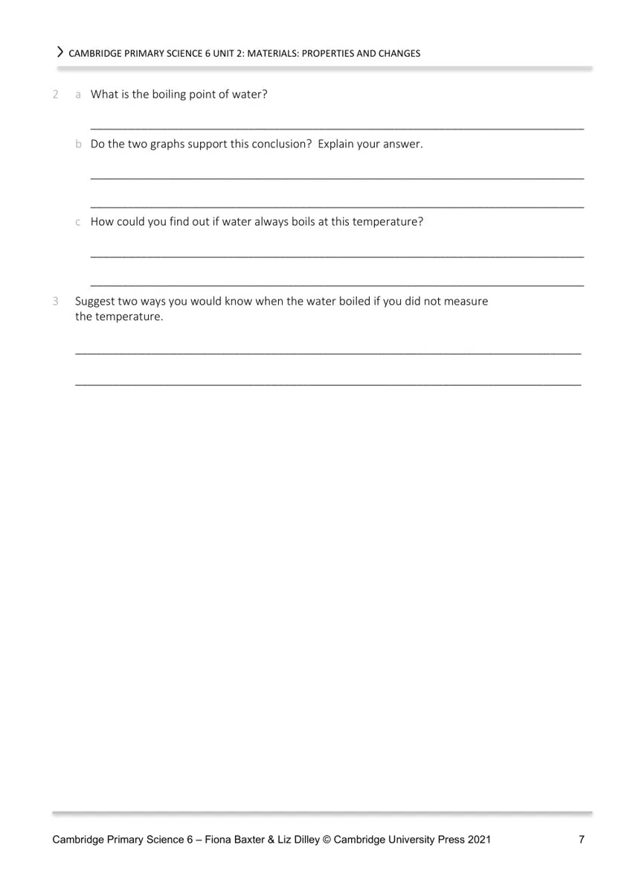
CAMBRIDGE PRIMARY SCIENCE 6 UNIT 2: MATERIALS: PROPERTIES AND CHANGESCambridge Primary Science 6 – Fiona Baxter & Liz Dilley © Cambridge University Press 2021 7 2 a What is the boiling point of water? ______________________________________________________________________________ b Do the two graphs support this conclusion? Explain your answer. ______________________________________________________________________________ ______________________________________________________________________________ c How could you find out if water always boils at this temperature? ______________________________________________________________________________ ______________________________________________________________________________ 3 Suggest two ways you would know when the water boiled if you did not measure the temperature. ________________________________________________________________________________ ________________________________________________________________________________
Trang 8/18
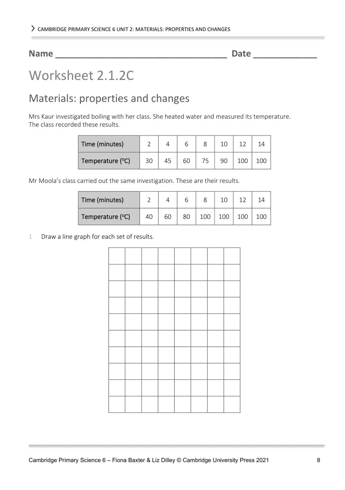
CAMBRIDGE PRIMARY SCIENCE 6 UNIT 2: MATERIALS: PROPERTIES AND CHANGESCambridge Primary Science 6 – Fiona Baxter & Liz Dilley © Cambridge University Press 2021 8 Name ___________________________________ Date _____________ Worksheet 2.1.2C Materials: properties and changes Mrs Kaur investigated boiling with her class. She heated water and measured its temperature. The class recorded these results. Time (minutes) 2 4 6 8 10 12 14 Temperature (oC)30 45 60 75 90 100 100 Mr Moola’s class carried out the same investigation. These are their results. Time (minutes) 2 4 6 8 10 12 14 Temperature (oC)40 60 80 100 100 100 100 1 Draw a line graph for each set of results.
Trang 9/18
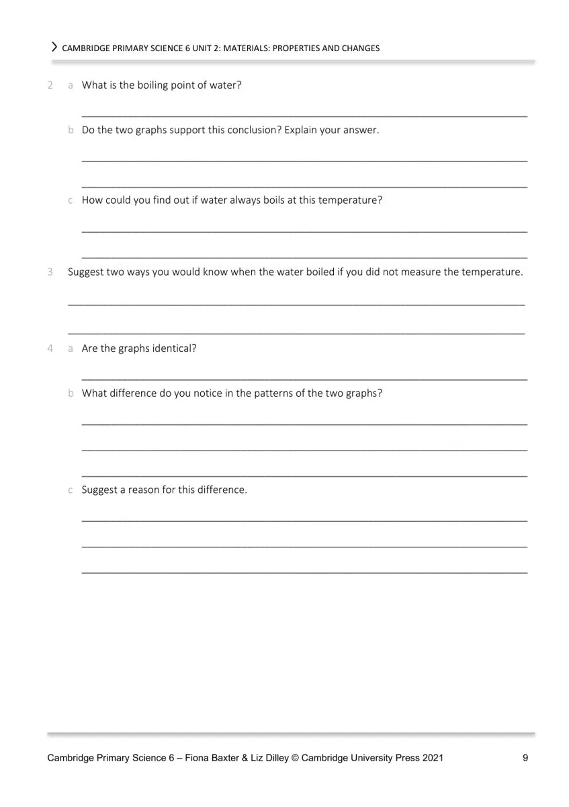
CAMBRIDGE PRIMARY SCIENCE 6 UNIT 2: MATERIALS: PROPERTIES AND CHANGESCambridge Primary Science 6 – Fiona Baxter & Liz Dilley © Cambridge University Press 2021 9 2 a What is the boiling point of water? ______________________________________________________________________________ b Do the two graphs support this conclusion? Explain your answer. ______________________________________________________________________________ ______________________________________________________________________________ c How could you find out if water always boils at this temperature? ______________________________________________________________________________ ______________________________________________________________________________ 3 Suggest two ways you would know when the water boiled if you did not measure the temperature. ________________________________________________________________________________ ________________________________________________________________________________ 4 a Are the graphs identical? ______________________________________________________________________________ b What difference do you notice in the patterns of the two graphs? ______________________________________________________________________________ ______________________________________________________________________________ ______________________________________________________________________________ c Suggest a reason for this difference. ______________________________________________________________________________ ______________________________________________________________________________ ______________________________________________________________________________
Trang 10/18
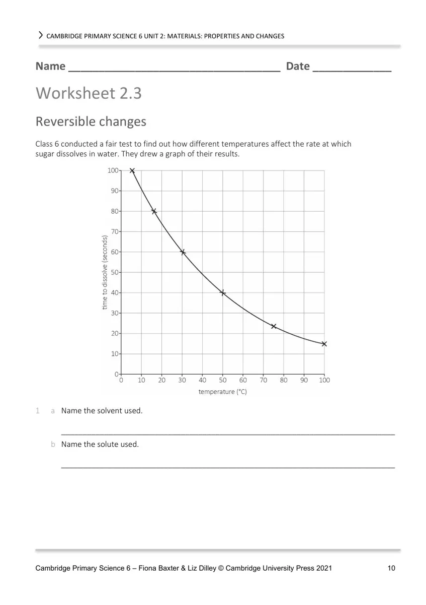
CAMBRIDGE PRIMARY SCIENCE 6 UNIT 2: MATERIALS: PROPERTIES AND CHANGESCambridge Primary Science 6 – Fiona Baxter & Liz Dilley © Cambridge University Press 2021 10 Name ___________________________________ Date _____________ Worksheet 2.3 Reversible changes Class 6 conducted a fair test to find out how different temperatures affect the rate at which sugar dissolves in water. They drew a graph of their results. 1 a Name the solvent used. ______________________________________________________________________________ b Name the solute used. ______________________________________________________________________________
Trang 11/18
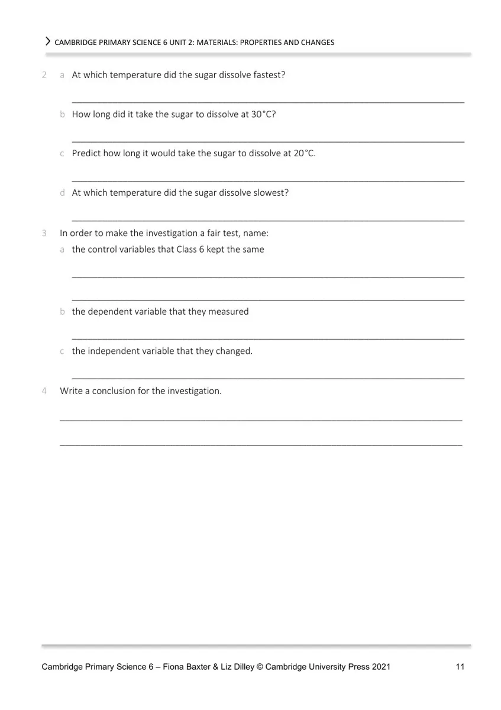
CAMBRIDGE PRIMARY SCIENCE 6 UNIT 2: MATERIALS: PROPERTIES AND CHANGESCambridge Primary Science 6 – Fiona Baxter & Liz Dilley © Cambridge University Press 2021 11 2 a At which temperature did the sugar dissolve fastest? ______________________________________________________________________________ b How long did it take the sugar to dissolve at 30°C? ______________________________________________________________________________ c Predict how long it would take the sugar to dissolve at 20°C. ______________________________________________________________________________ d At which temperature did the sugar dissolve slowest? ______________________________________________________________________________ 3 In order to make the investigation a fair test, name: a the control variables that Class 6 kept the same ______________________________________________________________________________ ______________________________________________________________________________ b the dependent variable that they measured ______________________________________________________________________________ c the independent variable that they changed. ______________________________________________________________________________ 4 Write a conclusion for the investigation. ________________________________________________________________________________ ________________________________________________________________________________
Trang 12/18
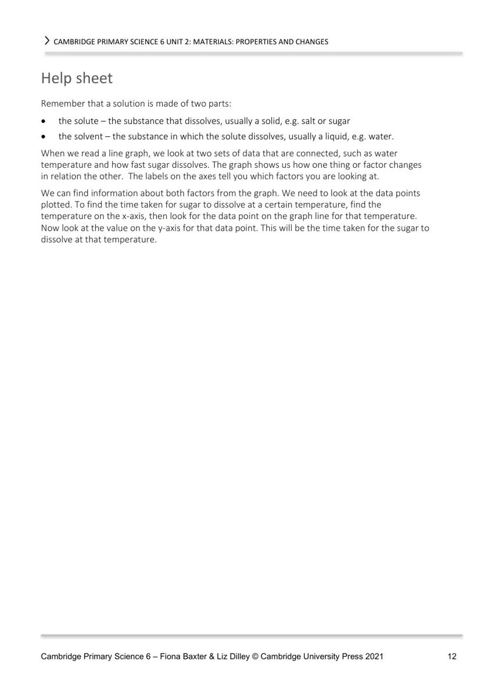
CAMBRIDGE PRIMARY SCIENCE 6 UNIT 2: MATERIALS: PROPERTIES AND CHANGESCambridge Primary Science 6 – Fiona Baxter & Liz Dilley © Cambridge University Press 2021 12 Help sheet Remember that a solution is made of two parts: •the solute – the substance that dissolves, usually a solid, e.g. salt or sugar •the solvent – the substance in which the solute dissolves, usually a liquid, e.g. water. When we read a line graph, we look at two sets of data that are connected, such as water temperature and how fast sugar dissolves. The graph shows us how one thing or factor changes in relation the other. The labels on the axes tell you which factors you are looking at. We can find information about both factors from the graph. We need to look at the data points plotted. To find the time taken for sugar to dissolve at a certain temperature, find the temperature on the x-axis, then look for the data point on the graph line for that temperature. Now look at the value on the y-axis for that data point. This will be the time taken for the sugar to dissolve at that temperature.
Trang 13/18
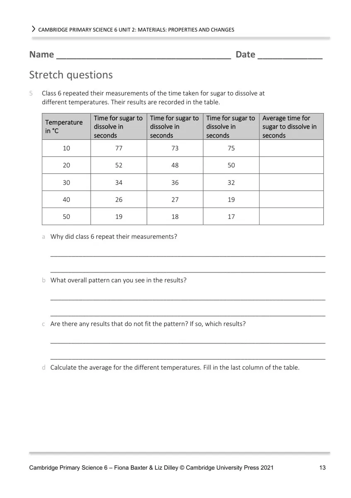
CAMBRIDGE PRIMARY SCIENCE 6 UNIT 2: MATERIALS: PROPERTIES AND CHANGESCambridge Primary Science 6 – Fiona Baxter & Liz Dilley © Cambridge University Press 2021 13 Name ___________________________________ Date _____________ Stretch questions 5 Class 6 repeated their measurements of the time taken for sugar to dissolve at different temperatures. Their results are recorded in the table. Temperature in °C Time for sugar to dissolve in seconds Time for sugar to dissolve in seconds Time for sugar to dissolve in seconds Average time for sugar to dissolve in seconds 10 77 73 75 20 52 48 50 30 34 36 32 40 26 27 19 50 19 18 17 a Why did class 6 repeat their measurements? ______________________________________________________________________________ ______________________________________________________________________________ b What overall pattern can you see in the results? ______________________________________________________________________________ ______________________________________________________________________________ c Are there any results that do not fit the pattern? If so, which results? ______________________________________________________________________________ ______________________________________________________________________________ d Calculate the average for the different temperatures. Fill in the last column of the table.
Trang 14/18
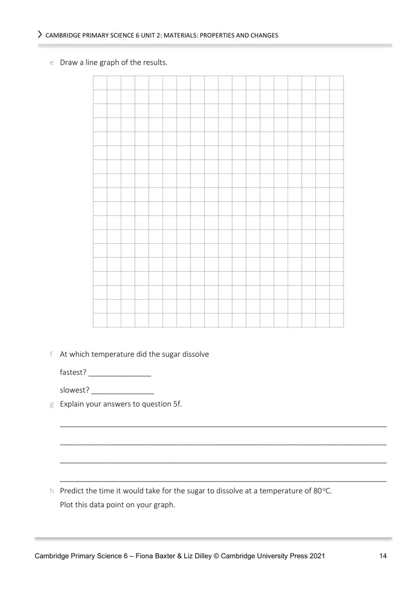
CAMBRIDGE PRIMARY SCIENCE 6 UNIT 2: MATERIALS: PROPERTIES AND CHANGESCambridge Primary Science 6 – Fiona Baxter & Liz Dilley © Cambridge University Press 2021 14 e Draw a line graph of the results. f At which temperature did the sugar dissolve fastest? _______________ slowest? _______________ g Explain your answers to question 5f. ______________________________________________________________________________ ______________________________________________________________________________ ______________________________________________________________________________ ______________________________________________________________________________ h Predict the time it would take for the sugar to dissolve at a temperature of 80oC. Plot this data point on your graph.
Trang 15/18
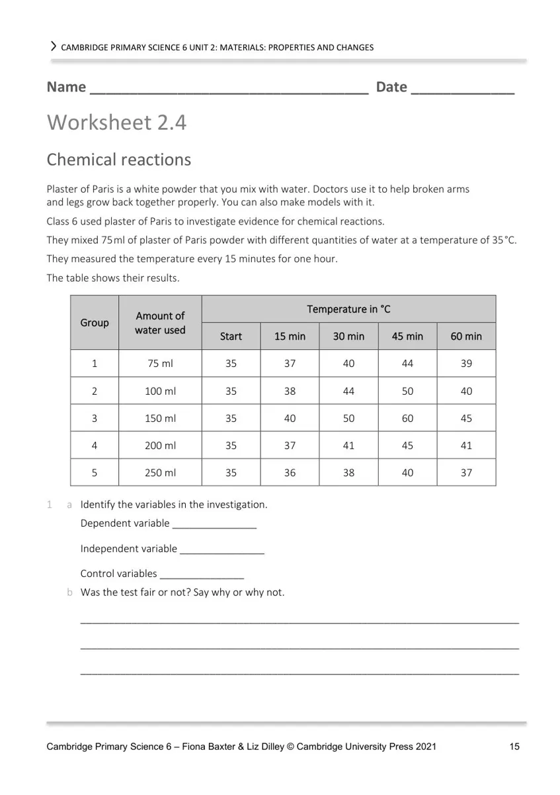
CAMBRIDGE PRIMARY SCIENCE 6 UNIT 2: MATERIALS: PROPERTIES AND CHANGESCambridge Primary Science 6 – Fiona Baxter & Liz Dilley © Cambridge University Press 2021 15 Name ___________________________________ Date _____________ Worksheet 2.4 Chemical reactions Plaster of Paris is a white powder that you mix with water. Doctors use it to help broken arms and legs grow back together properly. You can also make models with it. Class 6 used plaster of Paris to investigate evidence for chemical reactions. They mixed 75ml of plaster of Paris powder with different quantities of water at a temperature of 35°C. They measured the temperature every 15 minutes for one hour. The table shows their results. Group Amount of water used Temperature in °C Start 15 min 30 min 45 min 60 min 1 75 ml 35 37 40 44 39 2 100 ml 35 38 44 50 40 3 150 ml 35 40 50 60 45 4 200 ml 35 37 41 45 41 5 250 ml 35 36 38 40 37 1 a Identify the variables in the investigation. Dependent variable _______________ Independent variable _______________ Control variables _______________ b Was the test fair or not? Say why or why not. ______________________________________________________________________________ ______________________________________________________________________________ ______________________________________________________________________________
Trang 16/18
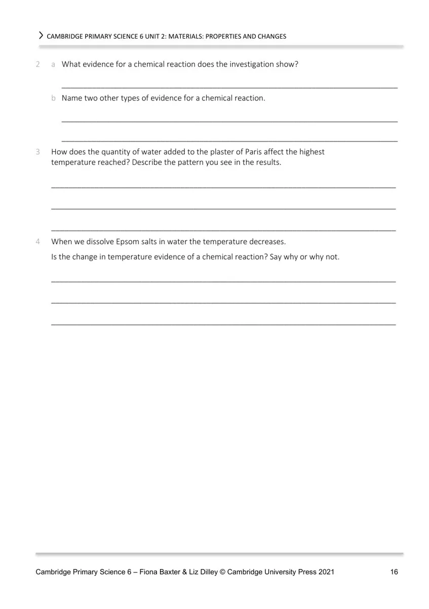
CAMBRIDGE PRIMARY SCIENCE 6 UNIT 2: MATERIALS: PROPERTIES AND CHANGESCambridge Primary Science 6 – Fiona Baxter & Liz Dilley © Cambridge University Press 2021 16 2 a What evidence for a chemical reaction does the investigation show? ______________________________________________________________________________ b Name two other types of evidence for a chemical reaction. ______________________________________________________________________________ ______________________________________________________________________________ 3 How does the quantity of water added to the plaster of Paris affect the highest temperature reached? Describe the pattern you see in the results. ________________________________________________________________________________ ________________________________________________________________________________ ________________________________________________________________________________ 4 When we dissolve Epsom salts in water the temperature decreases. Is the change in temperature evidence of a chemical reaction? Say why or why not. ________________________________________________________________________________ ________________________________________________________________________________ ________________________________________________________________________________
Trang 17/18
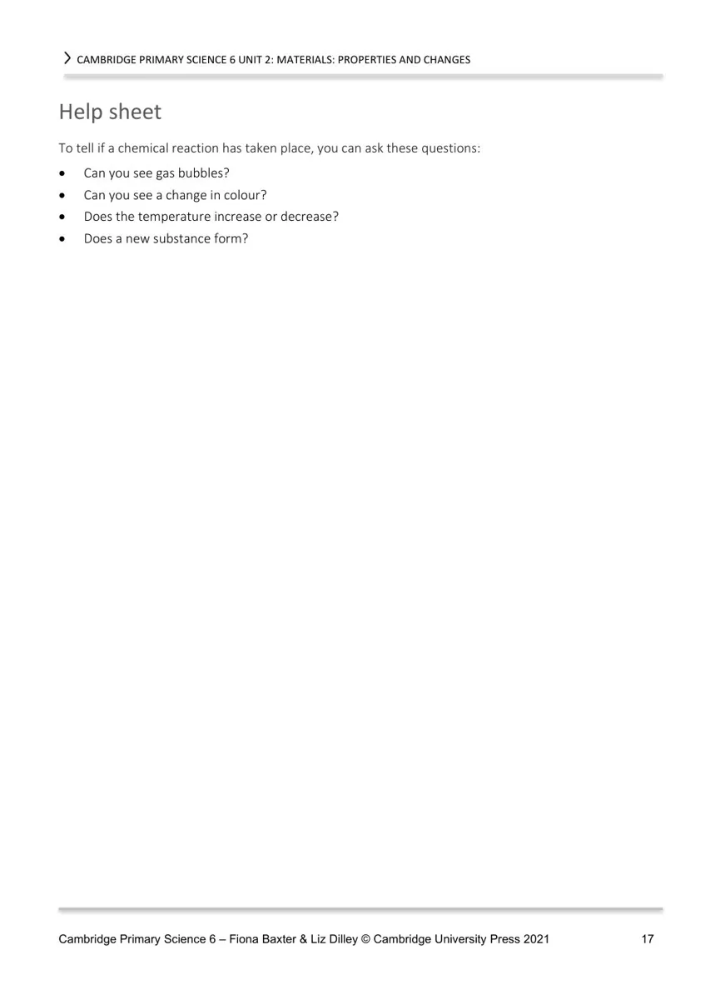
CAMBRIDGE PRIMARY SCIENCE 6 UNIT 2: MATERIALS: PROPERTIES AND CHANGESCambridge Primary Science 6 – Fiona Baxter & Liz Dilley © Cambridge University Press 2021 17 Help sheet To tell if a chemical reaction has taken place, you can ask these questions: •Can you see gas bubbles? •Can you see a change in colour? •Does the temperature increase or decrease? •Does a new substance form?
Trang 18/18
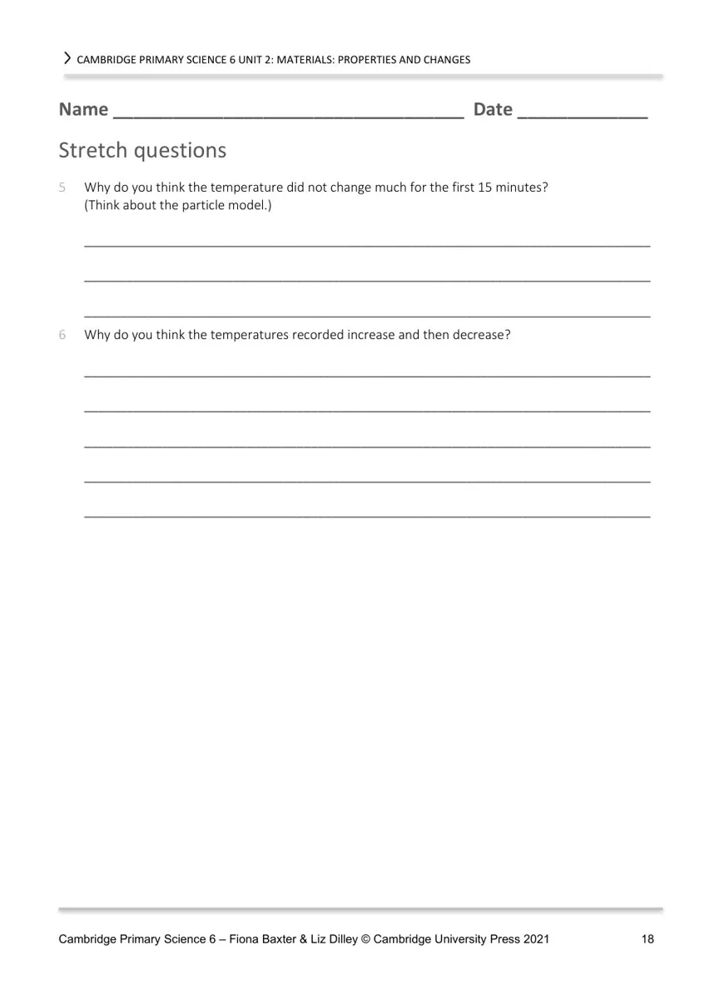
CAMBRIDGE PRIMARY SCIENCE 6 UNIT 2: MATERIALS: PROPERTIES AND CHANGESCambridge Primary Science 6 – Fiona Baxter & Liz Dilley © Cambridge University Press 2021 18 Name ___________________________________ Date _____________ Stretch questions 5 Why do you think the temperature did not change much for the first 15 minutes? (Think about the particle model.) ________________________________________________________________________________ ________________________________________________________________________________ ________________________________________________________________________________ 6 Why do you think the temperatures recorded increase and then decrease? ________________________________________________________________________________ ________________________________________________________________________________ ________________________________________________________________________________ ________________________________________________________________________________ ________________________________________________________________________________